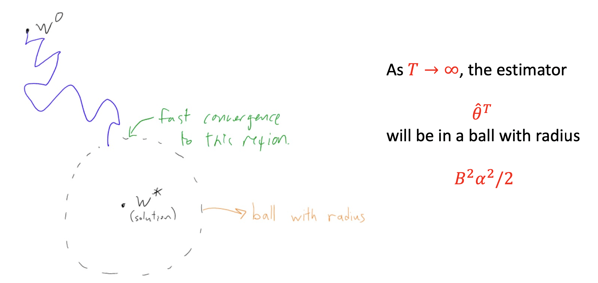

Linear Search¶
{kind=link}
Background¶
pre-info¶
Structure Risk. \(\min\limits_{\theta\in\R^s}f(\theta):=\cfrac{1}{n}\sum\limits_{i=1}^nL_i(Y_i;f(X_i;\theta))\) Gradient in multiple dimensions. \(\nabla f(x):=\begin{bmatrix} \frac{\partial f}{\partial x_1}(x)\\ \vdots\\ \frac{\partial f}{\partial x_p}(x)\\ \end{bmatrix}=[Df(x)]^T \in \R^{p\times1}\)
L-smooth function. \(\begin{cases}f(\theta)\text{ is continuously differentiable }\\\nabla f(\theta)\text{ is Lipschitz continuous }\iff\Vert\nabla f(x)-\nabla f(y)\Vert≤L\Vert x-y\Vert,\text{ for some }L>0\end{cases}\\\qquad\implies f\text{ is L-smooth }\) Lemma 3.1 Given a L-smooth function \(f,\forall x,y\in\text{dom}(f),f(y)\le f(x)+\nabla f(x)^T(y-x)+\cfrac{L}{2}\Vert y-x\Vert^2\)
Problem Setting¶
Assume: \(f(\theta)\) is L-smooth \(\(\min\limits_{\theta\in\R^s}f(\theta):=\cfrac{1}{n}\sum\limits_{i=1}^nL_i(Y_i;f(X_i;\theta))\)\)
given a point \(x^k\)
1. find a descent direction \(d^k\)
2. find a stepsize \(\alpha^k\)
\(\(x^{k+1}=x^{k}+\alpha^kd^k\)\)
假设在某点，寻找方向 direction 和步长 stepsize 使得最小，如果确定则只需要解决一维最优化问题就可以找到下一个搜索点. 首先选择方向 \(d^k\) 通过解决一维最优化问题找到步长 \(\alpha^k\)
Content¶
given a point \(x^k\):
- find a descent direction \(d^k\)
- find a stepsize \(\alpha^k\)
- \(x^{k+1}=x^{k}+\alpha^kd^k\)
Descent Direction \(d^k\), \(f\in C^1(\R^n),x\in \R^n\) A \(d\in\R^n\) is said to be a descent direction of \(f\) at \(x\impliedby\red{[\nabla f(x)]^Td < 0}\).
- More generally, if \(D\succeq0\), then \(d = -D\nabla f(x)\) is a descent direction. \(\iff\) 任一方向 \(d\) 只要能分解成一个正定矩阵 \(D\) 和负梯度 \(-\nabla f(x)\) 的乘积，那么这个方向一定是下降方向 Proof：\([\nabla f(x)]^T\cdot\big(-D\nabla f(x)\big)=-\big(\nabla f(x)^TD\nabla f(x)\big)\\\qquad\qquad \because \nabla f(x)\not=0,\therefore <0\)
是不是下降方向就看：\([\nabla f(x)]^Td < 0\)
At an x that is not stationary,
d = \(-\nabla f(x)\) is a descent direction？
yes. \([\nabla f(x)]^T\cdot-\nabla f(x)=-\Vert\nabla f(x)\Vert_2^2<0\)
is the Newton direction \(-[\nabla^2f(x)]^{-1}\nabla f(x)\) a descent direction?
A: Not necessary. \(\because d=[\nabla^2f(x)]^{-1}\nabla f(x),\therefore D=[\nabla^2f(x)]^{-1} ? \text{positive definite}\begin{cases}\in &\text{yes}\\\notin&\text{no}\end{cases}\)
| \(d^k=-D^k\nabla f(x^k),D\succeq0\) | descent direction | ||
|---|---|---|---|
| 牛顿法 | \(-[\nabla^2f(x^k)]^{-1}\nabla f(x^k)\) | 一阶导=0 \(d^k= -[\nabla^2f(x^k)]^{-1}\cdot\nabla f(x^k)\text{ (not necessary) }\\\text{only }[\nabla^2f(x^k)]\succeq0\) | 仅仅依赖函数值和梯度的信息(即一阶信息) |
| 最速下降法 | \(-\nabla f(x^k)\) | 负梯度方向 \(d^k=-1I\cdot \nabla f(x^k),\checkmark\) | |
| 拟牛顿法 | \(-B^k\nabla f(x^k)\) | \(d^k= -B^k\cdot\nabla f(x^k)\text{ (not necessary) }\\\text{only }B^k\succeq0\) | |
| 共轭梯度法 |
direction¶
Gradient Descent, GD, Steepest descent 最速下降法¶
梯度,某一点处的梯度方向是函数值增长最快的方向
Steepest descent with exact line search：
希望得到一个在该点下降最快的方向，来使得我们的迭代过程尽可能的高效。 梯度的反方向就是函数值下降最快的方向。
1. In practice: Always use analytic gradient, but check implementation with numerical gradient. This is called a gradient check.
存在性证明：负梯度方向就是下降最快方向¶
Taylor展开. \(f\in C^1(\R), \exist \xi\in\{x+td:t\in(0,1)\}, f(x+d)=f(x)+[\nabla f(x)]^Td+[\nabla f(\xi)-\nabla f(x)]^Td\). 其中本来二阶导的地方： \(\frac{1}{2}d^T\nabla^2 f(\xi)=[\nabla f(\xi)-\nabla f(x)]^T;\xi\text{ depends on }d\) 如果 \(\nabla f(x)≠0 \iff x\text{ is not a stationary}\), then，我们取 \(\red{d=-\alpha\nabla f(x) \text{ for some }\alpha>0}\) then，\(f(x+d)=f(x)+[\nabla f(x)]^Td+[\nabla f(\xi)-\nabla f(x)]^Td\) 变成 \(\(f(x-\alpha\nabla f(x))=f(x)-\alpha\Vert\nabla f(x)\Vert_2^2-\alpha([\nabla f(\xi)-\nabla f(x)]^T\cdot\nabla f(x))\)\) 其中第2项：\(\nabla f(x)\cdot \alpha\nabla f(x)=\alpha\Vert\nabla f(x)\Vert_2^2；\xi \text{ depends on }\alpha\) 其中第3项：\(\alpha([\nabla f(\xi)-\nabla f(x)]^T\cdot\nabla f(x))=0\) \(\(\implies f(x-\alpha\nabla f(x))=f(x)-\alpha\Vert\nabla f(x)\Vert_2^2\)\) \(\(\therefore \text{ for sufficiently small }\alpha>0, f(x-\alpha\nabla f(x))<f(x)\space\text{(是下降方向)}\)\) $\implies\red{-\nabla f(x)} $ is called the steepest descent direction
- 为什么 \(\alpha d:=-\alpha \nabla f(x) \text{ for some }\alpha>0,\)(此处的d范围更缩小一点，指方向 在没有给定d之前：\(f(x+d)=f(x)+\alpha\nabla f(x)^Td\) ∵ Given $ f\& x \implies f(x)\&\nabla f(x)^T\in$ 常量 \(\min\limits_\alpha f(x+d)=f(x)+\alpha\nabla f(x)^Td\) 是关于\(\alpha\)的函数，要随着\(\alpha\)增加而减小，且减少得尽可能快， \(\(\therefore d^k=\min_{d^k} \cfrac{\partial f}{\partial \alpha} = \max_{d^k} -\cfrac{\partial f}{\partial \alpha}\)\) Recall： Cauchy不等式. \(-\frac{\partial f}{\partial \alpha}=-\nabla f(x)^Td=(-\nabla f(x),d)=\Vert-\nabla f(x)\Vert\cdot\Vert d\Vert\cdot\cos\theta_k\). \(\theta_k\)就是搜索方向d和负梯度方向的角度，当\(\theta_k=0°\) 时，最大，所以就是最速. \(\(\implies \red{d=- \nabla f(x)}\)\)
Steepest descent with exact line search¶
\(\text{Start at }x^0\in R^n. \text{ For each }k=0,1,…\)
- \(\text{Set }d^k=-\nabla f(x^k)\qquad\text{(the search direction)}\)
- \(\text{pick } \alpha_k\in\argmin\{f(x^k+\alpha d^k):\alpha>0\}\qquad\text{(step size | learning rate)}\)
其中 \(\alpha_k\) is chosen according to the exact line search criterion 通过精确线搜索确定步长（隐含地假定，对于精确线搜索，存在一个最小化器\(\alpha_k\)。）
Convergence of Steepest descent with constant stepsize¶
\(\begin{cases}f\in C^2(\R^n)\\\inf f >-\infin\\\exist L>0, L\ge\Vert\nabla^2f(x)\Vert_2\\x^{k+1}=x^k-\cfrac{\gamma}{L}\nabla f(x^k)&(1)\end{cases}\implies\forall x, \text{fix any }\gamma\in(0,2)\) any accumulation point of \(\{x^k\}\) is a stationary point of \(f\) \((1)\): the formula as which sequence generated 也就是说，只要 stepsize \(α \in(0, \cfrac{2}{L}),\) 我们就能达到收敛的目标。
- proof:
Lemmma \(f\text{ is L-smooth }\\ \implies \forall x,y\in \text{dom}(f), f(y)\le f(x)+\nabla f(x)^T(y-x)+\cfrac{L}{2}\Vert y-x\Vert^2\\ \implies f(y)-f(x)\le\nabla f(x)^T(y-x)+\cfrac{L}{2}\Vert y-x\Vert^2\) 由上面的引理，我们可以对 stepsize 进行讨论, 目标是：\(f(\theta^{k+1})-f(\theta^k)<0\) $$\begin{align}f(\theta^{k+1})-f(\theta^k)&=f(\theta^k-\alpha_k\nabla f(\theta^k))-f(\theta^k)\&\le\nabla f(\theta^k)^T(-\alpha_k\nabla f(\theta^k))+\cfrac{L}{2}\Vert\alpha_k\nabla f(\theta^k)\Vert^2\&\le(\cfrac{L}{2}\alpha_k-1)\cdot\alpha_k\Vert \nabla f(\theta^k)\Vert^2\quad \colorbox{aqua}{\text{res-1}}\end{align}\\implies \cfrac{L\alpha_k}{2}-1<0\implies\alpha_k<\cfrac{2}{L}\rightarrow\cfrac{\gamma}{L} $$
但是 what is the optimal step size in the constant step-size strategy？
\(\colorbox{aqua}{\text{res-1}} \quad \Delta= f(\theta^{k+1})-f(\theta^k)\le(\cfrac{L}{2}\alpha_k-1)\cdot\alpha_k\Vert \nabla f(\theta^k)\Vert^2\\\qquad\Delta_{\alpha_k}:= \cfrac{L\alpha_k^2}{2}-\alpha_k<0,\therefore \alpha_k^*=\argmin\limits_{\alpha_k }\cfrac{L\alpha_k^2}{2}-\alpha_k \\\qquad\quad \cfrac{\partial\Delta_{\alpha_k}}{\partial\alpha_k}=L\alpha_k-1\xlongequal{SET}0\implies \alpha_k^*=\cfrac{1}{L}\)
Convergence of GD with optimal constant step-size \(\alpha=\frac{1}{L}\)
\(\begin{cases}f\text{ is L-smooth }\\\inf f>-\infin\\\{\theta^k\}_{k=0}^T:=\text{ the sequence by GD with }\alpha=\cfrac{1}{L}\end{cases}\\\qquad\implies \forall\theta^0, \min\limits_{1\le k\le T}\Vert\nabla f(\theta^k)\Vert^2\le\cfrac{2L(f(\theta^0)-\inf f)}{T}\)
也就是说，如果我们取这个 optimal step size，对任何的初始参数(分子 constant )，只要 run 足够多次(分母 T large enough), 这个梯度 \(\nabla f(x)\) 总能收敛到接近0，也就是 \(f(x)\) 达到我们的 local minimizer。
步长保守 the constant stepsize，下降缓慢 potentially
Expensive computation¶
在很高维的情况下，计算很复杂很好耗时间。 用全部样本to estimate the exact gradient of a random variable。
while computing gradient in GD。算每一个样本点的梯度，如果有 n 个样本，就要算 n 个梯度，使用了所有训练数据的误差, 然后再算她们的平均值来充当参数。 This computation is expensive if n is huge !!! \(\(\nabla f(\theta^k)=\cfrac{1}{n}\sum\limits_{i=1}^n\nabla_\theta l(\theta^k;X_i,Y)\)\)
所以现在不是真的去算出来，而是算用估计的法子。 Instead of computing the exact gradient, we consider \(g(\theta,\xi)\), which is a estimation satisfying \(\mathop{E}\limits_\xi[g(\theta,\xi)]=\nabla f(\theta)\)
| Assume ξ : | \(g(\theta,ξ)\) | notes | |
|---|---|---|---|
| Noisy gradients | a random noise satisfying E[ξ]=0 | \(\nabla f(\theta)+ξ\) | |
| Stochastic gradients | an index uniformly sampling from | \(\nabla_\theta l(\theta;X_ξ,Y_ξ)\) | 基于 Batchsize 的分类和进化 |
assumption of \(g(\theta,\xi)\) \(\begin{cases}f \text{ is convex }\\\mathbb E_\xi[g(\theta,\xi)]=\nabla f(\theta)&\text{(mean)}\\\text{given B, }\forall\theta,\mathbb E_\xi[\Vert g(\theta,\xi)\Vert^2]\le B^2&\text{(variance)}\end{cases}\)
因为用随机变量来 estimate，所以期望本来就是我们想要的 \(=\nabla f(\theta)\), 方差这里需要被 bounded by B \(\iff \sup \mathbb E_\xi[\Vert g(\theta,\xi)\Vert^2]\le B^2\)
\(\mathbb E_\xi\Vert g(\theta^k,\xi)\Vert\)
抽样估计思路的比较¶
| Gradient Descent, GD | Stochastic Gradient Descent, SGD | Batch Gradient Descent, BGD | mini-batch SGD | |
|---|---|---|---|---|
| Batch_Size | None, All train data 得到梯度 | 1, stochastic | - | subset, Batch Size |
| T(n) | 但数据量大时，计算非常耗时，同时神经网络常是非凸的，网络最终可能收敛到初始点附近的局部最优点 | ^ | ^ | ^ |
| 梯度准确性 | Accurate but slow (迭代次数少，迭代一次慢 | Fast but fluctuant (迭代一次快，迭代次数多，迭代这么多次的whole process 还是会比GD快 | ^ | 梯度准确了，学习率要加大。 |
| ^ | ^ | ^ | ^ | 利用噪声梯度，一定程度上缓解了GD算法直接掉进初始点附近的局部最优值 |
{kind=link}
{kind=link}
SGD 在训练 DNN 时并不容易找到全局最小值点。
SGD是基于随机采样的，每次迭代仅使用一个样本或一小批样本来估计梯度，因此它在参数空间中搜索最小值的路径是不确定的。 对于复杂的损失函数和高维的参数空间，DNNs通常存在许多局部最小值和鞍点。局部最小值是损失函数的局部极小值，而鞍点是在某个维度上是局部极小值，而在另一个维度上是局部极大值。这些局部最小值和鞍点可能导致SGD陷入局部最小值或收敛到不理想的解。 为了克服这个问题，研究人员发展了一些改进的优化算法，如随机梯度下降的变种（如动量梯度下降、Adam等）和自适应学习率方法。这些算法通过引入动量、自适应调整学习率等技术来更有效地搜索参数空间，并有助于避免陷入局部最小值
Stochastic Gradient Descent, SGD, 随机梯度下降¶
Instead of computing the exact gradient, we consider \(g(\theta,\xi)\), which is a stochastic estimation satisfying \(\mathop{E}\limits_\xi[g(\theta,\xi)]=\nabla f(\theta)\)
SGD就是一次跑一個樣本或是小批次(mini-batch)樣本然後算出一次梯度或是小批次梯度的平均後就更新一次，那這個樣本或是小批次的樣本是隨機抽取的，所以才會稱為==隨機梯度下降法==。
Stochastic Gradient. \(\xi\) is an index uniformly sampling from {1, 2, ..., n} 被随机选中的数据索引 $ g(\theta,\xi)=\nabla_\theta l(\theta;X_\xi,Y_\xi)\rightarrow \mathbb E_\xi g(\theta,\xi)=\nabla f(\theta)$
Stochastic Gradient Descent, SGD \(\(\text{Start from some }\theta^0\in\R^s,\\\text{ SGD updates as }\theta^{k+1}=\theta^k-\alpha_kg(\theta^k,ξ_k)=\theta^k-\alpha_k\cdot\nabla f_{\theta_k}(x_{\xi_k})\\\xrightarrow{\text{approximate}}\theta^k-\alpha_k\nabla f(\theta_k)\)\) \(g(\theta^k,\xi_k):=\) the stochastic gradient computed at \(\theta^k\) \(\xi_k :=\) the selected index at k round
- Sampling strategy to compute 𝑔(𝜃\(, 𝜉\)).
-
Choose step size 𝛼$ > 0 .
We need to choose decreasing step size. 如果是constant 就不能 find ultimate value
-
if \(\alpha_j\equiv \alpha>0\) ❌ (除非B递减 \(\xRightarrow{ \alpha_j\equiv \alpha>0}\mathbb E[f(\overline{\theta}^T)-f^*]\le\cfrac{\Vert\theta^0-\theta^*\Vert^2+B^2(T+1)\alpha^2}{2(T+1)}\) \(\xrightarrow{T->\infin}\hat{\theta}^T\text{ will be in a ball with radius }\frac{B^2\alpha^2}{2}\) 
-
if \(\alpha_j\downarrow\) e.g. \(\alpha_t=\frac{1}{t+1}(\text{decreasing})\) ⭕ \(\xRightarrow{\alpha_t=\frac{1}{t+1}}\begin{cases}\sum\limits_{t=0}^\infin\alpha_t=\sum\limits_{t=1}^\infin\cfrac{1}{t}=\infin\\\sum\limits_{t=0}^\infin\alpha_t^2=\sum\limits_{t=1}^\infin\cfrac{1}{t^2}=\cfrac{\pi^2}{6}<\infin\end{cases}\) \(\implies\lim\limits_{T\rightarrow\infin}\mathbb E[f(\overline{\theta}^T)-f^*]=0\)
-
{kind=link}
Convergence of SGD with step-size \(\alpha>0\)
\(\begin{cases}f \text{ is convex }\iff f(\lambda u + (1-\lambda )v)\le\lambda f(u) + (1-\lambda )f(v).\\E_ξ[g(\theta,ξ)]=\nabla f(\theta)\\E_ξ[\Vert g(\theta,ξ)\Vert^2]\le B^2,\forall \theta, \text{given B}\\\{\theta^k\}:=\text{ the sequence by SGD with }\alpha>0\end{cases}\) \(\implies E[f(\overline{\theta}^T)-f^*]\le\cfrac{\Vert\theta^0-\theta^*\Vert^2+B^2\sum\limits_{j=0}^T\alpha_j^2}{2\sum\limits_{j=0}^T\alpha_j},\begin{cases}\:\lambda_k=\sum\limits_{j=0}^k\alpha_j\\\overline{\theta}^k=\lambda_k^{-1}\sum\limits_{j=0}^k\alpha_j\theta^j\end{cases}\)
\(\xRightarrow{ \alpha_j=\alpha>0}E[f(\overline{\theta}^T)-f^*]\le\cfrac{\Vert\theta^0-\theta^*\Vert^2+B^2(T+1)\alpha^2}{2(T+1)}\)
\(\xrightarrow{T->\infin}\hat{\theta}^T=\cfrac{B^2\alpha^2}{2}\)
\(\xRightarrow{\alpha_t=\cfrac{1}{t+1}(\text{decreasing})}\begin{cases}\sum\limits_{t=0}^\infin\alpha_t=\sum\limits_{t=1}^\infin\cfrac{1}{t}=\infin\\\sum\limits_{t=0}^\infin\alpha_t^2=\sum\limits_{t=1}^\infin\cfrac{1}{t^2}=\cfrac{\pi^2}{6}<\infin\end{cases}\)
proof
Advantage:
- 计算快，最速下降法更新1次参数的时间，随机梯度下降法可以更新n次
Limitation:
- Slow convergence，因为随机，所以方向摇摆不定，收敛很慢,狂走之字路线，快的是计算过程 ⇒ SGD with momentum
- converge to the local optimal solution 不经意间收敛到local就停了，（随机梯度下降法由于训练数据是随机选择的，更新参数时使用的又是选择数据时的梯度，所以容易陷入目标函数的局部最优解。
- converge to saddle points
- 只能 go to some neighbourhoods of the optimal solution \(\mathbb E[f(\overline{\theta}^T)-f^*]\le\cfrac{\Vert\theta^0-\theta^*\Vert^2+B^2(T+1)\alpha^2}{2(T+1)}\rightarrow\hat{\theta}^T\text{ on a ball with radius}\cfrac{B^2\alpha^2}{2}\)
每次更新参数时只使用一个样本来计算梯度，这样就避免了BGD计算非常缓慢的问题，同时SGD每次计算梯度的样本不同，所以计算出来的梯度不稳定，会出现抖动，正是这种不稳定产生的抖动，使算法可能跳出鞍点从而找到更优解。SGD每次只使用一个样本更新梯度，计算更快，并且在训练过程中可新增样本，因此适合online训练。
每次使用一个样本计算梯度具有高方差性，容易受到离群点或异常数据的干扰，在优化过程中会出现严重的抖动，这种随机性便是其名字的由来
mini-batch SGD¶
设随机选择m个训练数据的索引的集合为K，
假设训练数据有100个，那么在m=10时，创建一个有10个随机数的索引的集合，例如K={61, 53, 59, 16, 30, 21, 85, 31, 51, 10}，然后重复更新参数
mini--batch Stochastic Gradient Descent, SGD. \(\(\text{Start from some }\theta^0\in\R^s,\\ \text{ SGD updates as }\large\theta^{k+1}=\theta^k-\alpha_k\mathop{\mathbb E}\limits_{\xi_k\in\Xi_k}g(\theta^k,ξ_k)=\theta^k-\alpha_k\cdot\mathop{\mathbb E}\limits_{\xi_k\in\Xi_k}\nabla f_{\theta_k}(x_{\xi_k})\)\) \(g(\theta^k,\xi_k):=\) the stochastic gradient computed at \(\theta^k\) \(\Xi_k :=\) the selected indexes at k round(mini-batch)
In each epoch, \(n_E\) SGD updates will be executed. Usually, we select
\(n_E=\text{ceil}(\frac{n}{p}),\quad\begin{cases}n:= \#\text{ samples in each epoch} = \#\text{ all samples}\\p:= \#\text{ samples in each mini-batch} \\n_E:=\#\text{batch in each epoch}\end{cases}\)
不同代之间数据要shuffle
采用一个小批量的数据进行梯度的计算，其目的是在保证计算速度的同时，避免SGD的随机性，降低参数更新时的方差，使收敛更稳定。
MBGD容易受学习率的影响：设置得太大容易出现与SGD类似的不稳定现象，会在鞍点处振荡，甚至偏离最优解；设置得太小，会造成收敛速度过慢。 MBGD的学习率对所有的参数更新都是一样的，如果数据是稀疏的，我们更希望对出现频率低的特征进行较大的更新，并且学习率会随着更新次数逐渐减小。显然，MBGD并不能满足这些需求，所以我们需要能够自适应学习率的算法。
SGD with Momentum¶
Momentum We often think of Momentum as a means of dampening oscillations and speeding up the iterations, leading to faster convergence. Momentum proposes the following tweak to gradient descent. We give gradient descent a short-term memory:
【不那么正确但很好理解的例子】Momentum is a heavy ball rolling down the same hill. The added inertia acts both as a smoother and an accelerator, dampening oscillations and causing us to barrel through narrow valleys, small humps and local minima. 动量是一个沉重的球滚下同一座山。增加的惯性既是平滑的，也是加速器，抑制振荡，导致我们穿过狭窄的山谷、小驼峰和局部最小值。
SGD和momentum在更新參數時，都是用同一個學習率(γ)
{kind=link}
主要是用在計算參數更新方向前會考慮前一次參數更新的方向 \((v_{t-1})\)，如果當下梯度方向和歷史參數更新的方向一致（因为是累积求和的），則會增強這個方向的梯度，若當下梯度方向和歷史參數更新的方向不一致，則梯度會衰退。然後每一次對梯度作方向微調。這樣可以增加學習上的穩定性(梯度不更新太快)，這樣可以學習的更快，並且有擺脫局部最佳解的能力。
{kind=link}
加上动量之后的SGD优化算法会沿着梯度的方向越来越快地进行更新，而不相关的方向将逐渐得到抑制，因此能减少优化过程中出现的“之”字形路线
Limitation: momentum may be wrong。如果一辆汽车一直加速，在遇到障碍物时是否能停下来？梯度更新也是一样的，Momentum虽然能加速SGD算法，但是很容易“冲上斜坡”
momentum 能逃离局部最小点，冲上小山谷，但是也有可能因为不断累积的动量太大，错过全局最小，一冲冲出去
SGD with Nesterov momentum¶
假设有一个“智能”的雪球从斜坡上往下滚，它在滚动过程中不仅会考虑动量为自己加速，还会思考“下一时刻是否会撞墙”，从而实现减速 —— 在计算参数的梯度时，应在损失函数中减去动量项
SGD with Nesterov momentum
\(\redν^k:=\) 近似当作参数下一步会变成的值 \(\gamma\) usually 0.9
{kind=link}
difference between Origin and Nesterov:
- Origin momentum: 在 \(θ^k\) 上既计算 gradient \(g(θ^k,\xi_k)\), 又计算 momentum \(v^k\)
- Momentum SGD先计算当前的梯度，更新后的累积梯度会出现一个大的跳跃
- Nesterov momentum: 在 \(θ^k\) 上先计算 momentum \(υ^k\), 再在新的点上计算 gradient \(g(ν^k,\xi_k)\) .，在NAG算法中不是计算当前位置的梯度，而是计算未来位置上（下一时刻）的梯度
- NAG SGD会在前一步梯度的基础上做修正，从而得到最下面的梯度，避免速度越来越快。with a shorter step to prevent overshoot
- NAG算法在循环神经网络、LSTM等任务上表现良好。
- Momentum SGD和NAG SGD这两种加速算法只针对梯度进行优化，并没有针对参数重要性进行不同程度的更新，也没有学习率的自动调整
Adagrad: Adaptive Learning Rates¶
學習率衰減(Learning rate decay)。大的學習率可以較快走到最佳值或是跳出局部極值，但越後面到要找到極值就需要小的學習率。
Rescale the learning rate of each coordinate by the historical progress.
Adagrad
$$ \text{Start from some }\theta^0\in\R^s, n_g^0=0,\text{ for }k\ge0\[1em]\qquad n_g^{k+1}= n_g+
The learning rate (step size) goes to zero quickly.
RMSProp¶
Discount the accumulated norm of the gradients.
RMSProp。 \(\(\text{Start from some }\theta^0\in\R^s, n_g^0=0,\text{ for }k\ge0\\ n_g^{k+1}=\red\gamma n_g+\red{(1-\gamma)}<g(\theta^k,\xi_k),g(\theta^k,\xi_k)>\\ \theta^{k+1}=\theta^k-\cfrac{\alpha_kg(\theta^k,\xi_k)}{\red{n_g+10^{-8}}} \qquad\text{ (rescale)}\)\)
仍然使用指数加权平均，旨在消除梯度下降中的摆动，与 Momentum 的效果一样。如果某个维度的导数比较大，则指数加权均值就大；如果某个维度的导数比较小，则其指数加权均值就小。这样可以保证各个维度的导数都在一个量级，从而减少摆动
ADAM, Adaptive Moment Estimation¶
Consider momentum and adaptive learning rate (second-order momentum) together.
是另外一种计算每个参数的自适应学习率的算法，比Adadelta算法和RMSprop算法更激进，不仅考虑了指数衰减均值，降低学习率过度衰减的问题，还加入了 Momentum 的动量思想。 \(m_t=\beta_1m_{t-1}+(1-\beta_1)g_t\) t时刻的动量 \(v_t=\beta_2v_{t-1}+(1-\beta_2)g_t^2\)t时刻的指数衰减均值。 如果 \(m_t，v_t\) 初始化为0，则会向0偏置，因此Adam做了偏差纠正 \(\hat{m}_t=\cfrac{m_t}{1-\beta_1^t}\) \(\hat{v}_t=\cfrac{v_t}{1-\beta_2^t}\) 最终梯度更新 \(\(\theta_{t+1}=\theta_t-\cfrac{\iota}{\sqrt{\hat{v}_t}+\epsilon}\hat{m}_t\)\)
建议:\(\alpha=0.001,\beta_1=0.9,\beta_2=0.999,\epsilon=10^{-8}\)
大量事件表明 Adam 》 Adadelta & RMSprop. Transformer in CV 很爱用ADAM
{kind=link}
当二阶动量参数 \(\beta_2\) 很大且一阶动量参数 \(\beta_1 < \sqrt{\beta_2}<1\) 时，Adam 可以收敛。据我们所知，我们是第一个证明具有任意大 \(\beta_1\) 的 Adam 可以在没有任何形式的有界梯度假设的情况下收敛。这个结果表明，没有任何修改的Adam在理论上仍然可以收敛。当\(\beta_2\) 较小时，我们进一步指出Adam 可以发散到无穷。我们的发散结果考虑了与收敛结果相同的设定（提前固定优化问题），这表明当增加 \(\beta_2\) 时存在从发散到收敛的相变。这些结果可能会为更好地调整 Adam 的超参数提供指导。
convergence of ADAM¶
But the convergence analysis contains some mistakes in the original paper. ADAM can be non-convergent!
{kind=link}
Newton’s method 牛顿迭代法¶
方法本身：求解非线性方程 \(g(x)=0\) 的==近似根== \(x^*\) 在 Descent Direction 上的应用：求解 \(\red{\text{新}\cdot g(x) = \nabla f(x^*)=0}\)
使用函数的泰勒级数的前面几项来寻找方程的根。
方法本身¶
- 背景 多数方程不存在求根公式，因此求精确根非常困难，甚至不可能，从而寻找方程的近似根就显得特别重要。方程用二次函数的形式表示出来，我们就可以通过上面的办法大踏步的前进了！由此我们祭出将任意N阶可导函数化为N次多项式的神器：N阶泰勒展开
-
思路 设 \(x^*\) 是 \(g(x)=0\) 的近似根，将 \(g(x)\) 在 \(x^k\) 附近用一阶泰勒多项式近似 \(\(g(x)=g(x^{k})+ \nabla g(x^k)^T\cdot (x-x^k)+o(\vert x-x_0\vert)\)\) 舍去高阶项：\(g(x)=g(x^{k})+ \nabla g(x^k)^T\cdot (x-x^k)\) 将近似根代入： \(\(\begin{align*} g(x^*)=g(x^{k})+ \nabla g(x^k)^T\cdot (x^*-x^k)=0\tag{1}\\x^*=x^k-\cfrac{g(x^k)}{g'(x^k)}\tag{2}\end{align*}\)\) 不能一步得到，所以需要迭代 ∴迭代公式：\(\red{x^{k+1}=x^k-\cfrac{f(x^k)}{f'(x^k)}}\)
【说人话】
- 先随机选一个点，
- 然后求出\(f(x)\)在该点的切线。
- 该切线与x轴相交的点为下一次迭代的值。 直至逼近\(f(x)=0\)的点。
- 停止标准
- \(\vert x_{k+1}-x_k\vert <\epsilon_1\)
- \(\vert f(x) \vert<\epsilon_2\): \(f(x)\)很小，小于精度，不能保证x的精度 局限性：对于某些特殊函数，小区间急速变化
- 几何本质 在原函数的某一点处用一个二次函数近似原函数，然后用这个二次函数的极小值点作为原函数的下一个迭代点。 基于当前迭代点的梯度信息进行搜索方向的选择的，牛顿法是通过Hessian矩阵在梯度上进行线性变换得到搜索方向
收敛¶
fast local convergence 快速的局部收敛 + Quadratic convergence 二阶收敛性 \(\iff\) 牛顿法靠近最优点时是二次收敛的
\(\begin{cases}g\in C^2(\red{\R})\\g(x^*)=0\\g’(x^*) ≠0. \end{cases}\implies\exist \varepsilon>0, \vert x^0-x^* \vert<\varepsilon.\) And with Newton’s iterate: \(x^{k+1}=x^k-\cfrac{g(x^{k})} {g'(x^{k+1})}\)is well defined. \(\(\implies\exist M>0, \vert x^{k+1}-x^k\vert≤M\Vert x^k-x^*\Vert_2\)\)
【说人话】就是说如果 \(x^0\) 选的好，那么牛顿法很好用，收敛速度很快，每次迭代之后，如果 \(x^0\) 的初始化足够接近一个好的解决方案，那么牛顿方法的定义很好，收敛速度也非常快：每次迭代的正确数字数量大约翻一番。（甚至步长都不需要确定）。所以牛顿法对函数在迭代点处的信息利用更加充分，直观来看，相比于梯度下降法，函数足够正则的情况下牛顿法迭代得更加准确，收敛速率也会更快。
当x在以 \(x^*\) 为原点，\(\varepsilon\) 为区间的邻域内进行迭代，所有迭代过来的 \(x^k\) 都以二次收敛的速度收敛于 \(x^*\)【局部の二次の收敛】，其中\(M=\frac{\tau}{2\delta}\)
失效¶
- \(x^0\)选的不好，离\(x^*\)很远，\(\exist x^k\in(x^0,x^*),g'(x^k)=0\)，几何上没有升降的空间，运算上分母为0失效（更远了）
- due to cycling
在 Descent Direction 上的应用¶
目标：\(\red{\text{新}\cdot g(x) = \nabla f(x^*)=0}\)
\(\exist x^{k+1}, \nabla f(x^{k+1})=0 \implies \nabla f(x)=\nabla f(x^k)+\nabla^2f(x^{k})(x-x^k)\)
迭代方程：
\(\(\begin{align*} g(x^*)=g(x^{k})+ \nabla g(x^k)^T\cdot (x^*-x^k)=0\tag{1}\\x^*=x^k-\cfrac{g(x^k)}{g'(x^k)}\tag{2}\end{align*}\\\Downarrow\)\) \(\(\begin{align*} \nabla f(x^*)=\nabla f(x^{k})+ \nabla^2 f(x^k)^T\cdot (x^*-x^k)=0\tag{3}\\x^*=x^k-\cfrac{\nabla f(x^k)}{\nabla^2f(x^k)}\tag{4}\end{align*}\)\) 经典牛顿法: \(\(d^k=-\cfrac{\nabla f(x^k)}{\nabla^2f(x^k)}, \alpha\equiv1\)\)
要求：
- \(\forall k,\nabla^2f(x^k)\)可逆\(\iff \in\text{sigular 非奇异矩阵}\) 二阶可微函数
- 计算\(\cfrac{\nabla f(x^k)}{\nabla^2f(x^k)}\) 简单
\(\text{ For k=0,1,2…,}\text{ update }x^{k+1}=x^k-\cfrac{\nabla f(x^k)}{\nabla^2f(x^k)}\).
不要去求解\((\nabla^2f)^{-1}\)然后再乘，而是把\(d=\cfrac{\nabla f(x^k)}{\nabla^2f(x^k)}\)，解\(\nabla^2f(x^k)d=\nabla f(x^k)\)
⭐ 牛顿法也只是找到一阶导为0，也就是说朝着极值的\(d^k\)，不一定是函数值的下降方向，还要verify 通过\(\nabla^2 f(x^*)\)去验证\(X=x^*\)是否local minimizer ⭐ 可以用更少的迭代次数大踏步地前进，并且前进的方向也更趋向于函数的全局最优解（即最值而非极值点），同时也能够摆脱上面梯度下降法中确定α的痛苦
Here we discuss just the local rate-of-convergence properties of Newton’s method. We know that for all x in the vicinity of a solution point x∗ such that∇2 f(x∗) is positive definite, the Hessian ∇2 f(x) will also be positive definite. Newton’s method will be well defined in this region and will converge quadratically, provided that the step lengths αk are eventually always 1.
缺点¶
- 每一步迭代需要求解一个 \(n\) 维线性方程组，这导致在高维问题中计算量很大.海瑟矩阵 \(\nabla^2 f (x^k )\) 既不容易计算又不容易储存.
- \(\nabla^2 f (x^k )\) 不正定时，由牛顿方程给出的解 dk 的性质通常比较差.例如可以验证当海瑟矩阵正定时，dk 是一个下降方向，而在其他情况下 dk 不一定为下降方向.
- We need to assume 𝑓 to be convex to guarantee the direction is a descent direction.
-
Newton’s method only converges locally, even for strongly convex functions.
-
advantage:
-
Newton’s method enjoys a local quadratic convergence rate under some assumptions: fast local convergence 快速的局部收敛 + Quadratic convergence 二阶收敛性 \(\iff\) 牛顿法靠近最优点时是二次收敛的.当x在以\(x^*\)为原点，\(\varepsilon\)为区间的邻域内进行迭代，所有迭代过来的\(x^k\)都以二次收敛的速度收敛于\(x^*\)【局部の二次の收敛】 \(\exist M>0 ,\vert \theta^{k+1}-x^*\vert≤M\Vert x^k-x^*\Vert^2\)
{kind=link}
If the current iteration achieves an accuracy of the order 𝟏𝟎^-𝟑, we can expect an accuracy of the order 𝟏𝟎^-𝟔 for the next iteration!!!
Conjugate gradient method 共轭梯度法¶
{kind=link}
{kind=link}
Flops per iteration is \(O(n^2)\); It converges in at most n steps; It keeps track of O(1) vectors of dimension n per iteration.
idea: Modify the steepest descent direction to fit the (ellipse) geometry.
Projection onto v. \(u\in\R^n,v\in\R^n\setminus\{0\}\). The projection of u onto v \(\text{proj}_v(u):=w:=\cfrac{u^Tv}{\Vert v\Vert_2^2}v\) 从几何的角度：\(\Vert w\Vert_2=\Vert u\Vert_2\cos\theta=\Vert u\Vert_2\cfrac{u^Tv}{\Vert u\Vert_2\Vert v\Vert_2}=\cfrac{u^Tv}{\Vert v\Vert_2}\implies\) Unit vector along w is \(\cfrac{v}{\Vert v\Vert_2}\)
Gram-Schmidt process. Given a set of linearly independent vectors \(\{v^0,...,v^k\} \subset\R^n, w^0\xlongequal{SET} v^0.\) \(\forall j = 1,...,k, w^k=v^k-\sum\limits_{j=0}^{k-1}\cfrac{{(v^k)}^Tw^j}{\Vert w^j\Vert_2^2}w^j, \begin{cases}\forall i,w^i\ne 0\\\forall i\ne j,{(w^i)}^Tw^j=0\end{cases}\\\implies\text{Span}\{v^0,...,v^k\}=\text{Span}\{w^0,...,w^i\}\)
Generalized Gram-Schmidt process. Given \(A\in\R^n,A\succ0\) and a set of linearly independent vectors \(\{v^0,...,v^k\} \subset\R^n, w^0\xlongequal{SET} v^0.\) \(\forall j = 1,...,k, w^k=v^k-\sum\limits_{j=0}^{k-1}\cfrac{{(v^k)}^TAw^j}{{(w^j)}^TA w^j}w^j, \begin{cases}\forall i,w^i\ne 0\\\forall i\ne j,{(w^i)}^TAw^j=0\end{cases}\\\implies\text{Span}\{v^0,...,v^k\}=\text{Span}\{w^0,...,w^i\}\)
Conjugate gradient method: Conceptual version¶
Start at \(x^0\in\R^n\) and \(d^0 =-\nabla f(x^0)=b-Ax^0\).
For each k = 0,1,2,...,
- If \(d^k = 0\), terminate.
- Pick \(\alpha_k\text{ s.t. }\alpha_k\in\min\{f(x^k +\alpha d^k): α\ge0\}\).
- \(x^{k+1}\xlongequal{SET}x^k +α_kd^k, d^{k+1} = -\nabla f(x^{k+1})-\blue{\sum\limits_{j=0}^k\cfrac{[-\nabla f(x^{k+1})]^T Ad^j}{ (d^j)^TAd^j}}\)
Conjugate gradient method: Formal version¶
Start at \(x^0\in\R^n\) and \(d^0 =-\nabla f(x^0)=b-Ax^0\).
For each k = 0,1,2,...,
- If \(d^k = 0\), terminate.
- Pick \(\alpha_k\text{ s.t. }\alpha_k\in\min\{f(x^k +\alpha d^k): \alpha\ge0\}\).
- \(x^{k+1}\xlongequal{SET}x^k +\alpha_kd^k, d^{k+1} = -\nabla f(x^{k+1})-\blue{\cfrac{\Vert\nabla f(x^{k+1})\Vert_2^2}{\Vert\nabla f(x^k)\Vert_2^2}d^k}\)
Conjugate gradient method: Actual version¶
迭代过程：
Start at \(x^0\in\R^n\) and \(\blue{r^0}=d^0 =-\nabla f(x^0)=b-Ax^0\).
For each k = 0,1,2,...,
- If \(\Vert d^k\Vert \blue{\text{ is below a tolerance}}\), terminate.
- \(α_k=\cfrac{(r^k)^Tr^k}{(d^k)^TAd^k}\:,\:x^{k+1}=x^k+\alpha_kd^k\:,\:r^{k+1}=r^k-\alpha_kAd^k\qquad\text{(excat line search)}\).
- \(\beta_{k} =\cfrac{(r^{k+1})^Tr^{k+1}}{(r^k)^Tr^k}\:,\:d^{k+1}=r^{k+1}+\beta_kd^k\qquad\text{Update} d^{k+1}\)
优点:
- One matrix-vector multiplication per iteration if \(Ad^k\) is saved.
- Keeping track of four vectors, \(x^k, r^k, d^k, Ad^k\) saved.
Newton-CG啊，其实挺简单的。传统的牛顿法是每一次迭代都要求Hessian矩阵的逆，这个复杂度就很高，为了避免求矩阵的逆，Newton-CG就用CG共轭梯度法来求解线性方程组，从而避免了求矩阵逆。
Truncated Newton’s method (Hessian-Free Optimization)修正牛顿法¶
Projection onto \(S_+^n\). \(A\in S^n,A = UDU^T\) be its eigenvalue decomposition. \(A_+ := UD_+U^T\) \(D_+\) is the diagonal matrix with \((d_+)_{ii}=\max\{d_{ii},0\}, \forall i.\) \(A_+\) is the unique solution of $ \min\Vert Y-A\Vert_F \text{ s.t.}Y\succeq0$
定义¶
- Pick \(\sigma\in(0,1), \beta\in(0,1), \overline{\alpha}_k\equiv1\), a small \(\eta>0\) and a huge \(M > 0\). Initialize at \(x^0 \in\R^n\)
- For \(k = 0,1,2,...,\)
- let \(UDU^T\) be an eigenvalue decomposition of \(\nabla^2f(x^k).\)
- Let \(\varLambda\) be diagonal with \(\lambda_{ii} = \max\{\min\{M,d_{ii}\},\eta\} \qquad\text{(Project } d_{ii} \text{ on }[\eta,M])\)
- Set \(D^k \coloneqq U\varLambda U^T\) and \(d^k\coloneqq -D^k\nabla f(x^k).\).
- Update \(x^{k+1}=x^k+\alpha^kd^k\\\qquad \alpha^k\text{ is obtained via the Armijo line search by backtracking }\)
Let \(f\in C^2(\R^n)\) with \(\inf f > 1\) and let \(\{x^k\}\) be generated by the truncated Newton’s method. Then any accumulation point of \(\{x^k\}\) is a stationary point of f.
Computational concerns¶
拟牛顿类算法¶
对于大规模问题，函数的海瑟矩阵计算代价特别大或者难以得到，即便得到海瑟矩阵我们还需要求解一个大规模线性方程组. 它能够在每一步以较小的计算代价生成近似矩阵，并且使用近似矩阵代替海瑟矩阵而产生的迭代序列仍具有超线性收敛的性质. 不计算海瑟矩阵 \(∇^2 f (x)\)，而是构造其近似矩阵 \(B^k\) 或其逆的近似矩阵 \(H^k\)
Basic idea: Secant equations¶
-
思路
目的：\(g(x)=0，g\in C^1(\R)\)
Taylor Formula. \(g(x^{k+1})=g(x^{k})+\nabla g(x^k)(x^{k+1}-x^k)=0\) \(\implies x^{k+1}=x^k-\cfrac{g(x^k)}{\nabla g(x^k)}\)
但当一阶导\(\nabla g(x)\)太难求，我们就想到了割线方程 Secant equation。Use finite difference to approximate \(\nabla g(x)\)
Secant equations. \(\nabla g(x^k)\approx\cfrac{g(x^k)-g(x^{k-1})}{x^k-x^{k-1}}\) \(\implies x^{k+1}=x^k-g(x^k)\cfrac{x^k-x^{k-1}}{g(x^k)-g(x^{k-1})}\)
-
Notes:
- 这里同时有k+1，k，k-1. initialized at \(x^0,x^{-1},g(x^0)≠g(x^{-1})\)
- The local convergence rate of the secant method is typically slower than Newton’s method. However, the computational cost per iteration can be smaller when \(g'\) is hard to compute compared with g
Find the square root of 2 using the secant method, starting at \(x^{-1} = 1.4, x^0 = 1.5\), up to 4 decimal places.
在 descent direction 上的应用¶
目的：\(\nabla f(x)=0\)
same ideas: \(\nabla g(x^k)(x^k-x^{k-1})\approx g(x^k)-g(x^{k-1})\Downarrow\) \(\(\nabla^2f(x^{k+1})(x^{k+1}-x^k)\approx\nabla f(x^{k+1})-\nabla f(x^k)\)\)
Notation: \(s^k:=x^{k+1}-x^k,\space y^k=\nabla f(x^{k+1})-\nabla f(x^k)\implies \nabla^2f(x^{k+1})s^k=y^k\)
成功的关键： 我们能够连续不断地构造矩阵\(\begin{cases}\text{Method 1: }B^{k+1}\approx \nabla^2f(x^{k+1})\\\text{Method 2 }H^{k+1}\approx \cfrac{1}{\nabla^2f(x^{k+1})}\end{cases}\) 去拟合海塞矩阵，使得\(\begin{cases} B^{k+1}s^k=y^k \\H^{k+1}y^k=s^k\end{cases}\), 因为我们是要迭代的，所以就是能连续生成迭代
问题：怎么迭代，迭代有什么要求?
- Initialize \(B^0\) (or \(*H^0*\)) at a positive definite matrix. proposition of BFGS. \(\begin{cases}H_k\succ0\\{y^k}^Ts^k>0\\H_{k+1}\text{ is given by BFGS update}\end{cases}\implies H_{k+1}\succ 0.\) Same for B
- Since \(B^0\) and \(H^0\) were symmetric to start with, by induction, all \(B^k\)and \(H^k\) are symmetric.
-
Popular update formula
-
Note:
- DFP and BFGS are rank-2 updates, while SR1 is rank-1 update.
- In practice, BFGS usually performs better.
- Verify the secant equation for BFGS.
Quasi-Newton method¶
Given \(f\in C^1(\R^n).\)
Initialize at \(x^0\in\R^n\) and \(B_0,H_0\succ 0\), is symmetric and positive definite
Quasi-Newton based on \(B_k\)¶
For \(k = 0,1,2,...\)
- Find \(d^k =-B_k^{-1}\nabla f(x^k).\)
- Update \(x^{k+1} = x^k +d^k\times 1\),
- Set \(y^k =\nabla f(x^{k+1})-\nabla f(x^k)\) and \(s^k = x^{k+1}-x^k\).
- Compute \(B_{k+1}\) by Popular update formula
BFGS¶
Quasi-Newton based on \(H_k\)¶
For \(k = 0,1,2,...\)
- Find \(d^k =-H_k\nabla f(x^k).\)
- Update \(x^{k+1} = x^k +d^k\times 1\),
- Set \(y^k =\nabla f(x^{k+1})-\nabla f(x^k)\) and \(s^k = x^{k+1}-x^k\).
- Compute \(H_{k+1}\) by Popular update formula
StepSize \(\alpha_k\)¶
\(\text{ given } x^{k} \text{ and }d^k\)
变成了单变量优化：\(\alpha^k =\min\limits_{\alpha>0}\varphi(\alpha) =f(x^k+\alpha d^k)\).它是目标函数 f (x) 在射线 \(\{x^k + αd^k:α > 0\}\) 上的限制
分类: exact & inexact¶
exact line search strategy. 等于求极小值点问题。
\(\nabla\varphi(\alpha)=[\nabla f(x^k+\alpha d^k)]^Td^k\xlongequal{SET}0\implies[\nabla f_{k+1}]^Td^k=0\)
通常需要很大计算量，在实际应用中较少使用
inexact line search strategy。寻找步长\(\alpha\)的一个区间，通过逐步迭代的方法去寻找仅仅是满足条件的点。当搜索结束时，需要满足该步长能够对目标函数带来充分的下降。More practical strategies perform an inexact line search to identify a step length that achieves adequate reductions in f at a minimal cost.
inexact line search strategy¶
Termination conditions 线搜索准则¶
因为迭代： \(\(f(x^k + α^kd^k) = \min\limits_{α≥0}f(x^k + αd^k)\)\)
为提高非精确算法的搜索效率，需要确定一些termination conditions 去判断是否迭代到 \(\alpha^*\)，确保迭代的收敛性。
Sufficient Decrease condition (Armijo condition) 充分下降条件¶
-
定义：
\[\begin{cases}x\in \R^n, d\in \R^n\\\alpha>0, c_1\in(0,1)\\f(x^k+\alpha d^k)≤f(x^k)+c_1\alpha[\nabla f(x^k)]^Td^k \end{cases}\implies \alpha\text{ satisifies Armijo rule}\]其中：\(d^k\): descent direction;\(c_1=10^{-4}\)is chosen to be quite small
alone is not sufficient to ensure that the algorithm makes reasonable progress along the given search direction:
α = 0 显然满足条件，而这意味着迭代序列中的点固定不变，研究这样的步长是没有意义的 是 the Wolfe conditions \(1^{st}\) condition 是 the Goldstein conditions \(2^{nd}\) inequality 是 Backtracking line search 的停止标准stopping criterion， alone is ok
-
存在性证明:
\(\alpha 存在 \iff \text{Armijo rule is not valid}\)，选取符合Armijo rule 确实会使得函数值下降
Let \(f\in C^1(\R^n), x\in\R^n, d\in\R^n \text{ be a descent direction at }x\). Let \(\sigma\in(0,1)\). Then there \(\exist \alpha_1 > 0\) so that \(\forall \alpha\in[0,\alpha_1],f(x + \alpha d)≤f(x)+\alpha\sigma[\nabla f(x)]^Td.\)
-
How to execute Armijo rule in practice?
Fix \(\sigma\in(0,1)\) and \(\beta\in(0,1)\). Given \(x\in\R^n, d\in\R^n, \overline{\alpha}>0\). Find the smallest nonnegative integer \(j = j_0\) so that
\(\(f(x +\overline{\alpha}\beta^jd)≤ f(x)+\overline{\alpha}\beta^j\sigma[\nabla f(x)]^Td\)\) normally: \(\sigma= 10^{-4}, \beta=\cfrac{1}{2}, \overline{\alpha}\beta^{j_0}\) is the step size
Note:
- \(d\) is a descent direction + \(j\) is sufficiently large \(\rightarrow \beta^j\) is sufficiently small → Armijo rule satisfied。
- 可证 \(\overline{\alpha}\beta^j \text{ is decreasing}\therefore \text{it is called backtracking}\)
- \(\overline{\alpha}\) 选择对收敛效率来说很关键
-
Convergence under Armijo rule \(\begin{cases}f\in C^1(\R^n),\inf f>-\infin\\ \{\overline\alpha_k\}\subset\R ,0<\inf\limits_k\overline{\alpha}_k≤\sup\limits_k\overline{\alpha}_k<\infin\\ \sigma\in(0,1),\beta\in(0,1)\\ \{D_k\}\succ 0, d^k=-D_k\nabla f(x^k)\\ x^k \text{ is non-stationary}\\ x^{k+1} = x^k + \alpha_kd^k \end{cases}\) \(\alpha_k\) is generated via the Armijo line search by backtracking with $ x = x^k, d = d^k, \overline\alpha =\overline\alpha_k$ Then any accumulation point of \(\{x^k\}\) is a stationary point of \(f\).normally $\sigma=10^{-4},\beta=\frac{1}{2} $
for BFGS:
\(\exist M>0,\Vert H_k\Vert_2\Vert H_k^{-1}\Vert_2≤M,\forall k\\\qquad\implies \lim\limits_{k\rightarrow\infin}\Vert_2=0\)
\(\cos\theta_k=\cfrac{{d^k}^TH_k^{-1}d^k}{\Vert d^k\Vert_2\Vert H_k^{-1}d^k\Vert_2}\ge\cfrac{{d^k}^T{H_k}^{-1}d^k}{\Vert H_k^{-1}\Vert \Vert d^k\Vert_2^2}\ge\cfrac{\lambda_{\min}(H_k^{-1})}{\Vert H_k^{-1}\Vert_2}=\cfrac{1}{\lambda_{\max}(H_k)\Vert H_k^{-1}\Vert_2}=\cfrac{1}{\Vert H_k^{-1}\Vert_2\Vert H_k\Vert_2}\ge\cfrac{1}{M}\)
-
Sufficient Decrease and Backtracking approach use just the sufficient decrease condition to terminate the line search procedure
Wolfe conditions¶
-
定义 \(1^{st}\) ：sufficient decrease condition：\(f(x^k+\alpha^k d^k)≤f(x^k)+c_1\alpha^k[\nabla f(x^k)]^Td^k\) \(2^{nd}\) ：curvature condition：\(\nabla f(x^k+\alpha^kd^k)^Td^k≥c_2\nabla f_k^Td^k\) with \(0<c_1<c_2<1，c_1\text{ usually }10^{-3},c_2\text{ usually }0.9\) φ(α) 在点 α 处切线的斜率不能小于 φ′(0) 的 \(*c_2*\) 倍
-
curvature condition \(\nabla f(x^k+\alpha^kd^k)^Td^k≥c_2\nabla f_k^Td^k\\ \qquad\qquad\parallel\qquad\qquad\qquad\parallel\\\qquad\space \nabla\varphi(\alpha^k)\qquad\qquad c_2\nabla\varphi(0)\) 其中：\(c_2=0.9\) in Newton or quasi-Newton method, \(c_2=0.1\) in a nonlinear conjugate gradient method
-
Wolfe conditions 存在性证明：是有区间能满足 Wolfe conditions
-
The strong Wolfe conditions modify the curvature condition to force \(α^k\) to lie in at least a broad neighborhood of a local minimizer or stationary point of φ. The only difference with the Wolfe conditions is that we no longer allow the derivative \(φ′ (α^k )\) to be too positive. \(1^{st}\) ：sufficient decrease condition：\(f(x^k+\alpha^k d^k)≤f(x^k)+c_1\alpha^k[\nabla f(x^k)]^Td^k\) \(2^{nd}\) ：modified curvature condition：\(\red{\vert}\nabla f(x^k+\alpha^kd^k)^Td^k\red{\vert≤} c_2\red{\vert}\nabla f_k^Td^k\red{\vert}\) with \(0<c_1<c_2<1\)
-
Convergence under Wolfe conditions Zoutendijk’s theorem. \(f\in C^1(\R^n),\inf f >-\infin,x^0\in\R^n,\\\{x^k\} \text{is a sequence of non-stationary points generated as }x^{k+1}+\alpha_kd^k, \\\begin{cases}f\in C^1(\R^n),\inf f >-\infin\text{ (下有界，连续可微)}\\\exist\ell>0,\Vert \nabla f(x)-\nabla f(y)\Vert_2\le\ell\Vert x-y\Vert_2，\forall x,y\in\R^n\text{ (梯度满足L-利普希茨连续)}\\d^k\text{ is a descent direction}\\\alpha_k \text{ satisfies the Wolfe conditions }\text{(Wolfe )}\end{cases}\\\qquad\implies\sum\limits_{k=0}^\infin\cos^2\theta_k\Vert\nabla f(x^k)\Vert_2^2<\infin,\\\qquad\implies\exist\delta, \text{so that } \cos\theta_k=\cfrac{-[\nabla f(x^k)]^Td^k}{\Vert\nabla f(x^k)\Vert_2\Vert d^k\Vert_2}\ge\delta,\forall k\text{(independent of k)}\) \(\Vert\nabla f(x^*)\Vert=0 \rightarrow \Vert\nabla f(x^n)\Vert<\varepsilon\)
Goldstein conditions 条件¶
- 定义 \(f(x^k)+(1-c)\alpha^k[\nabla f(x^k)]^Td^k≤f(x^k+\alpha^k d^k)≤f(x^k)+c\alpha^k[\nabla f(x^k)]^Td^k\) with \(0<c<\cfrac{1}{2}\) \(2^{nd}\) ≤ ：sufficient decrease condition 必须在两条直线之间
are often used in Newton-type methods but are not well suited for quasi-Newton methods that maintain a positive definite Hessian approximation
Goldstein 准则能够使得函数值充分下降，但是它可能避开了最优的函数值.